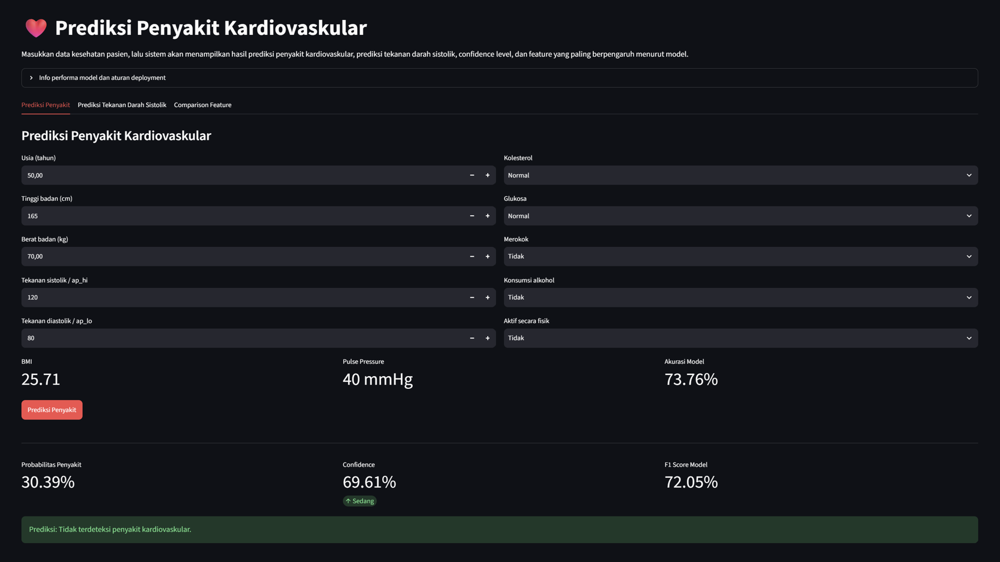

An interactive app that takes basic health inputs and returns a disease probability, an estimated systolic blood pressure and the features that influenced each result.
- Cleaned the dataset by removing duplicates and impossible blood pressure, height and weight values.
- Added BMI and pulse pressure as features.
- Trained two Gradient Boosting models on an 80/20 split: one classifier and one regressor.
- Shows a confidence level and a table and chart comparing feature importance across both models.
- 73.8%accuracy
- 72.0%F1 score
- 7.2 mmHgblood pressure MAE
For learning only. It is not medical advice. The app may take a moment to wake up on the first visit.

